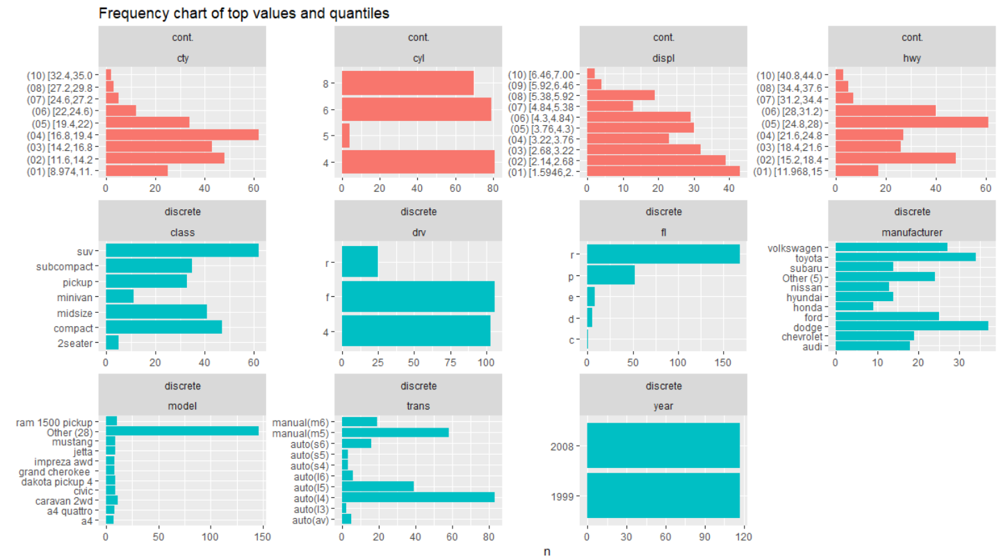

The goal of datascanr is to run a pre-analysis screen of your data. Before guessing which fields you should look at, these charts are designed to help you understand the fields of your data.
Installation
You can install the development version from GitHub with:
# install.packages("devtools")
devtools::install_github("rjake/datascanr")Example
There is a plotting function which is used to visualize the variation in the dependent variable across all factors in all fields.
library(datascanr)
## basic example code
variation_plot(ggplot2::mpg, "cty")
The variation plot is likely to be unfamiliar. This image should help explain what’s going on (click to see a bigger pic):

The idea is that categories matter. I like to think of it as a tug-of-war between different identities a single observation holds in comparison with the grand mean (dotted line below). In this example, being a Toyota (manufacturer == "toyota") linked it to having a higher city mpg than the grand mean (19 mpg vs 17 mpg). Because the factors in manufacturer have more variation, this field pulls more strongly on the estimated mpg than the year. In this case, there is very little difference between cars from 1998 and 2008. Although this observation has year == 2008 and observations with this year are lower than in 1998, the low variation leads to less pull on the estimate.
for has a group mean well below the grand mean (across all manufacturers/observations). The 8 cyl (V8) engine has a similar contribution. As you work your way from highest to lowest, the expectation is that the impact of these different factors have less and less pull.
Sometimes it’s easier to see an example of where one observation may fall. For this you can use
variation_plot_single_obs(
df = ggplot2::mpg,
dep_var = "cty",
id = 182, # essentially the row number
labels = TRUE
)
There is also a function to view the frequency of fields across all variables. This can help in choosing columns to use in the ignore_cols argument when visualizing the data.
field_scan(ggplot2::mpg, n_cat = 10, n_quantile = 4)Categorical data can be rolled-up into a limited number of categories, putting less freuquent factors in an “Other” category (defaults to n_cat = 15). Numeric data is cut into a specified number of quantiles (defaults to n_quantile = 10). 
You can run a demo file here. At the bottom are a lot of df <-...; dep_var <-...; ignore_cols <- ...; for examples that can be run within R. You will have to install some of the packages in order to use them. For example, the AER::Fatalities data set is Fatalities out of the AER package. To see what is on your machine, you can use the top of this script.
Please reach out with any questions rjake@sas.upenn.edu, [@yake_84](https://twitter.com/yake_84)